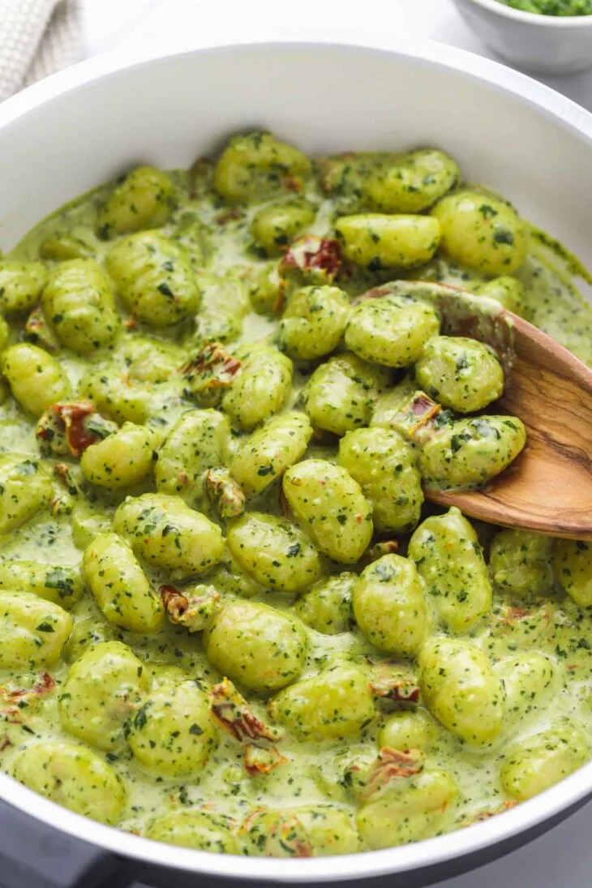

Pesto Gnocchi

This 4-ingredient creamy pesto gnocchi dinner is a family-friendly vegetarian meal that you can whip up in just 15 minutes! Pillowy and tender gnocchi smothered in a creamy basil and dried tomato sauce. An easy comforting dinner that you’ll keep making over and over again!
Ingredients
- Gnocchi – use a pack of store-bought gnocchi, or homemade. I usually go for dried gnocchi, but you can also use dried or frozen if you like.
- Pesto – homemade or store-bought. I love making my own basil pesto at home, tastes WAY better than the jarred stuff!
- Sundried tomatoes – from a jar in oil. In this recipe, I’m using a little bit of the oil and the tomatoes.
- Heavy cream – to make this vegan, substitute with soy cream or cashew cream.
Preparation Steps
- Cook the gnocchi. You have 2 options, you can either pan-fry the gnocchi for a crispy texture or boil them in water. I usually boil them in water until they float to the surface and that’s how I know that they’re ready.
- In a pan, heat sundried tomato oil (from the jar), add the chopped sundried tomatoes, and cook for a minute. This will help release their flavor.
- Add the cream, simmer for a minute (don’t boil), remove from heat, and mix in the basil pesto. Season with salt.
- Add the cooked and drained gnocchi to the sauce, and stir until the gnocchi is covered in the creamy sauce.
- Serve warm and if desired, top with parmesan (not vegetarian), or with vegetarian hard cheese.
Home